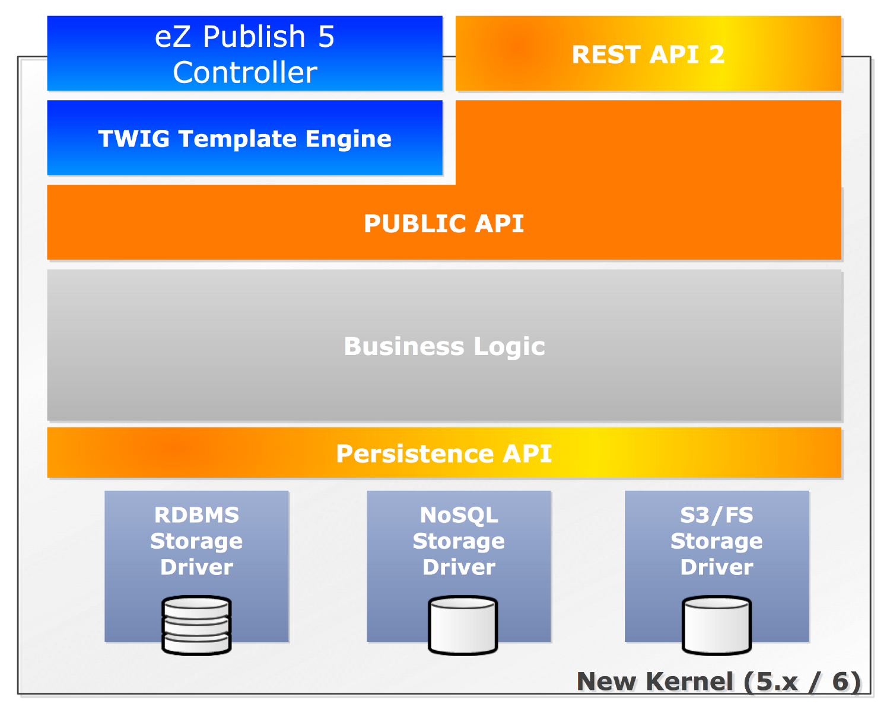
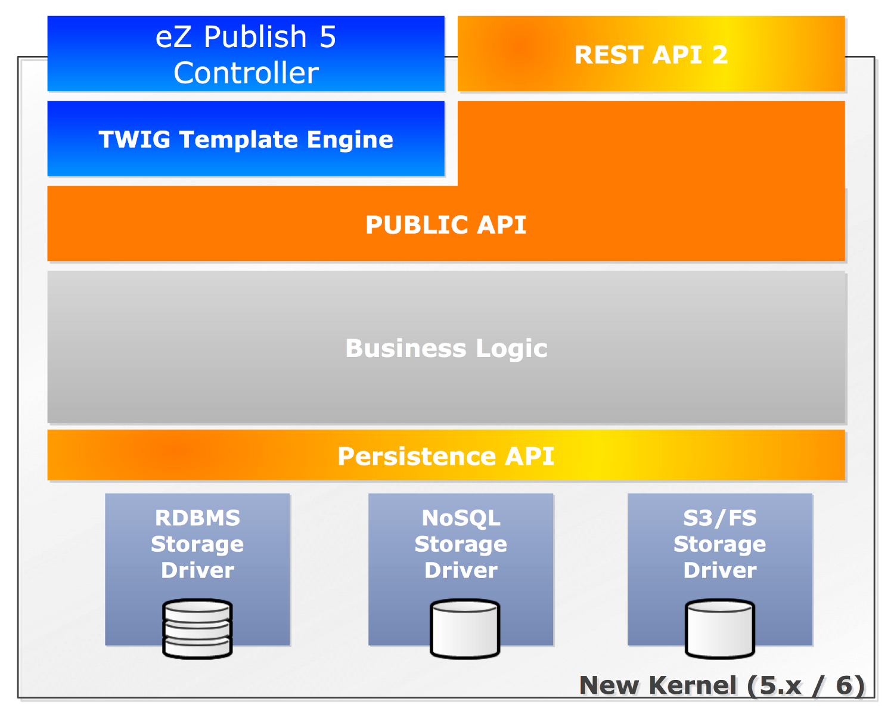

eZ Publish REST API
Available online at:
http://j.mp/ez-sc-2013-rest-api
Me
- eZ Community member since 2005
- Part of the eZ Engineering team since 2011
- Lead engineer User Interface at eZ

The end
?
Available online at:
http://j.mp/ez-sc-2013-rest-api

?